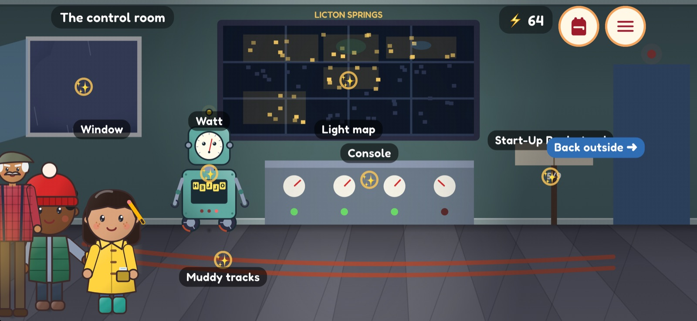

The story
One stormy night.
One very literal robot.
Down at the Licton Light electric station, Watt can only follow instructions he can read, word for word, and the storm has blown the pages of his Start-Up Book all over the neighborhood. The pages that are left came out scrambled, and so did Watt's sentences.
- Eleven chapters set in a real Seattle neighborhood: the park and its red spring, the school, the pond (seen from the sidewalk), a coffee shop, a college library and the police station.
- A cast to love: word-collecting Wren, steady Milo, story-telling Grandpa Gil, a bossy duck named Duchess, and Watt, who hears "it's raining cats and dogs" and looks for the cats.
- Fix a page and a street of houses lights up on the station's map, until the whole neighborhood glows for the Lantern Walk.
